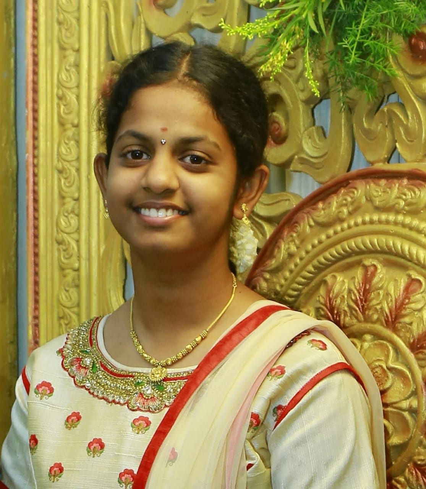

My name is Suvetha.
I am from Coimbatore.
Currently i am studying in
I am from Coimbatore.
Currently i am studying in
Amrita Vishwa Vidyapetham,B.Tech-Cyber Security
My hobbies are
- Singing
- reading
- listening to music
- reading books
- watching movies
About my family:
Think of your family today and every day thereafter, don’t let the busy world of today keep you from showing how much you love and appreciate your family.
Family
Education:
I have completed my education from Veveaham School, Dharapuram.
- KG-Lourde matha School
- Primary-Lourde Matha School
- Secondary-Sree Adharsh School
- Higher Secondary-veveaham School
Description
On my free time i used to play with my brothers and sistersI like to travel long distances with my family members and my friends. Travelling to hills is the best experience which ever i had. Till my secondary education i used to travel a lot but when i joined my higher secondary my travel has been reduced. Being in joint family i can understand the values of each person in a family.